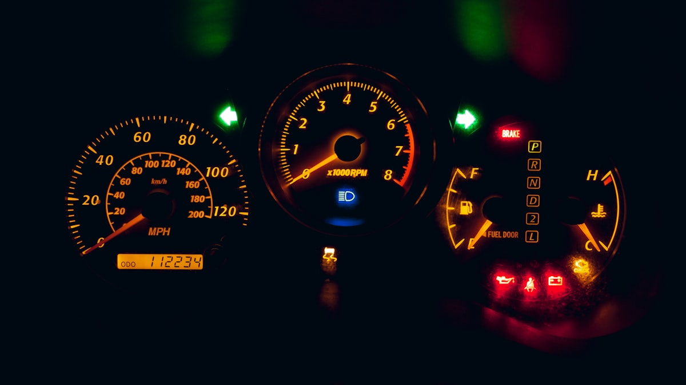

Не заводиться авто — проблема з ключем чи імобілайзером?

Сідаєте в авто, повертаєте ключ — а воно не заводиться? Стартер крутить, бензин є, акумулятор заряджений — але двигун не запускається або заводиться і одразу глохне. У 90% таких випадків проблема не в моторі, а в системі авторизації ключа: чіп ключа, антена навколо замка, блок іммобілайзера. Допомагаємо швидко зрозуміти причину і виправити.
Авто не заводиться, а індикатор іммобілайзера моргає?
Зателефонуйте — підкажемо що перевірити прямо зараз
Як зрозуміти, що проблема саме в ключі — діагностика за 3 хвилини
- Знайдіть індикатор іммобілайзера на панелі приладів. Зазвичай це значок ключа, машини з ключем або замка. Норма: загорається на 1–2 секунди при увімкненні запалення і гасне після авторизації ключа. Проблема: моргає постійно або горить навіть після запуску.
- Спробуйте запасний ключ (якщо є). Якщо запасний заводить нормально — проблема в первинному ключі (батарейка, чіп, антена ключа). Якщо запасний теж не заводить — проблема в авто (блок іммобілайзера, антена замка, проводка).
- Послухайте стартер. Якщо стартер взагалі не крутить — це не іммобілайзер, а акумулятор / реле / стартер. Іммобілайзер блокує саме запуск двигуна, не стартер.
- Перевірте «глохне чи не глохне». Якщо мотор зачепився і одразу заглох (через 1–2 секунди) — класична ознака проблеми з іммобілайзером.
5 найчастіших причин «не заводиться через ключ»
- Сіла батарейка smart-key. Авто перестає «бачити» ключ — особливо помітно зимою. Для більшості моделей: прикладіть ключ до позначеного місця на старт-кнопці або у кишеню стояка керма — заведе. Потім замініть батарейку (CR2032 / CR2025).
- Зламаний чіп у ключі. Якщо ключ падав, потрапляв у воду, перебував у морозильнику — чіп може вийти з ладу. Зовні ключ виглядає нормально, але авто його «не впізнає».
- Зношена антена навколо замка запалювання. На старіших авто (10+ років) антена-петля втрачає чутливість. Лікується заміною антени (від 800 грн з роботою).
- Збій прив'язки після ремонту АКБ / ECU. Якщо нещодавно міняли акумулятор, ремонтували електроніку, паяли блок керування — могла «злетіти» прив'язка ключа. Лікується повторною прив'язкою через діагностику.
- Несправний блок іммобілайзера. Найскладніший випадок. Симптом: ні один з ключів не працює, а діагностика показує що чіп ОК. Лікується ремонтом або заміною блока (CAS, FEM, EZS, BCM).
Чим відрізняється «не заводиться через ключ» від інших проблем
| Симптом | Імовірна причина |
|---|---|
| Стартер не крутить взагалі, на панелі темно | Акумулятор / клеми / контакт маси |
| Стартер не крутить, панель горить | Реле стартера / втягуюче |
| Стартер крутить, мотор не схоплюється | Паливо / іскра / іммобілайзер |
| Мотор схоплюється і одразу глохне | 90% — іммобілайзер блокує |
| Моргає значок ключа / іммобілайзера | Ключ не авторизовано (батарейка/чіп/прив'язка) |
| Кнопка Start/Stop не реагує взагалі | Сіла батарейка smart-key або несправна антена |
Що ми робимо в майстерні
- Діагностика ключа на спеціальному стенді — перевіряємо живий чи мертвий чіп, який тип транспондера, чи дає сигнал.
- Діагностика антени замка через діагностичне обладнання — бачимо чи доходить сигнал від ключа до блока іммобілайзера.
- Діагностика блока іммобілайзера — зчитуємо помилки, перевіряємо EEPROM, аналізуємо логи прив'язок.
- Виправлення: заміна батарейки, перепрошивка чіпа, ремонт антени, повторна прив'язка ключа, ремонт або заміна блока — залежно від проблеми.
Чого НЕ робити
- Не намагайтесь «обманути» іммобілайзер. В інтернеті є відео «замотайте ключ у фольгу і піднесіть до антени» — це або не працює, або тимчасово рятує, але псує систему ще більше.
- Не «прошивайте» ключ через ноунейм-програматори з AliExpress. Це з ймовірністю 70% перетворить живий ключ на цеглу і додасть вам ще 2000 грн ремонту.
- Не виривайте проводку від блока іммобілайзера. Поради «просто відключіть іммобілайзер» в більшості сучасних авто неможливі — система інтегрована з ECU і блокує запуск системно.
- Не везіть на «класичне СТО». Звичайні СТО рідко мають обладнання для діагностики чіпів і антен. Потрібен майстер по ключах із Autel IM608 / VVDI / CGDI.
Часті запитання
Я поміняв АКБ — і авто не заводиться. Це нормально?
На деяких марках (часто BMW, Mercedes, нові VAG) при відключенні АКБ блок іммобілайзера переходить у «безпечний режим» і потребує повторної ініціалізації ключа. Лікується за 20-30 хвилин через діагностику.
Skoda/VW не заводиться, на панелі моргає «іммо» — це смерть авто?
Ні, у 95% випадків це або сіла батарейка ключа, або вилетіла прив'язка. Стандартна процедура для VAG-групи: повторна авторизація ключа через OBD, від 800 грн.
Чи можна відключити іммобілайзер назавжди?
Технічно — так, через прошивку ECU (chiptuning з вимкненням IMMO). Але ми категорично НЕ рекомендуємо: авто стає вразливим до угону, страхова може відмовити, продавати буде складніше. Краще полагодити прив'язку.
Скільки часу займає прив'язка нового ключа?
Прив'язка вже виготовленого ключа — 20–60 хвилин залежно від марки. Якщо ключа ще немає — додається час на виготовлення (1–4 години).
Не марнуйте час на гадання — за 30 хв скажемо точну причину
Діагностика чіпа, антени і блока іммобілайзера на професійному обладнанні